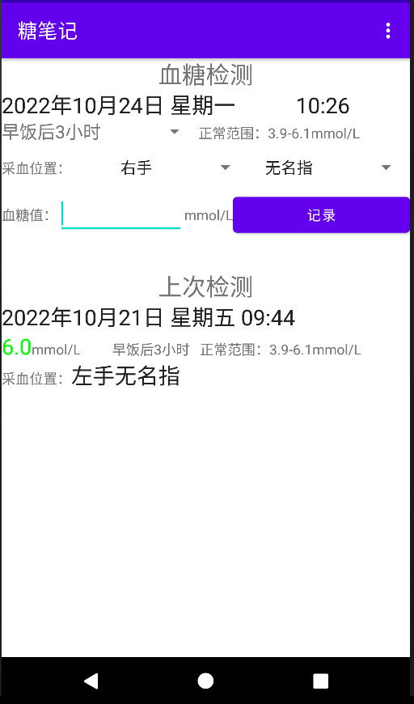
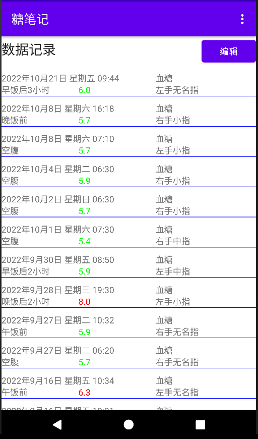
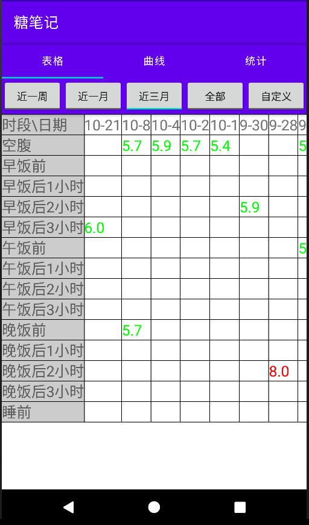
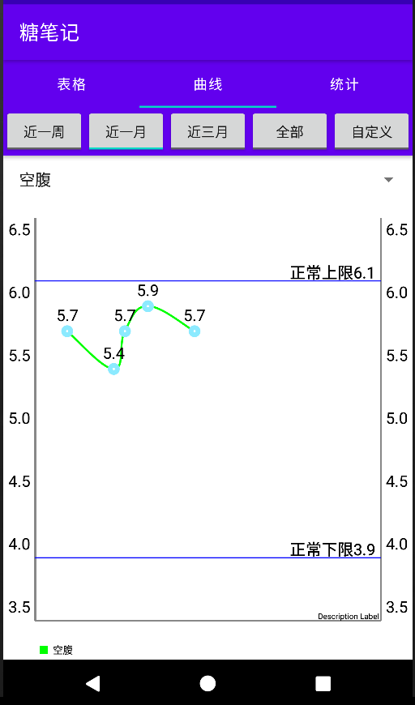
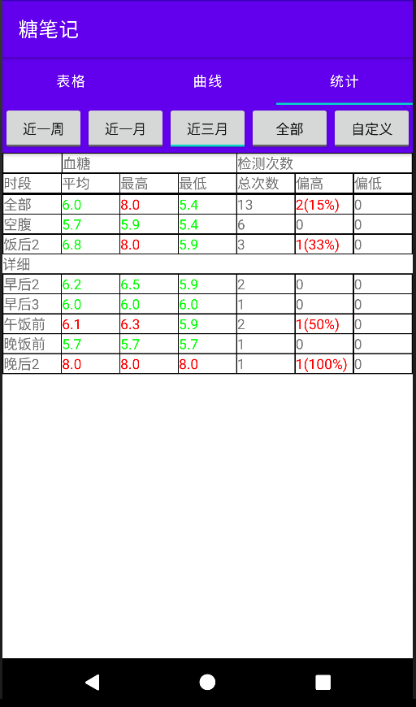
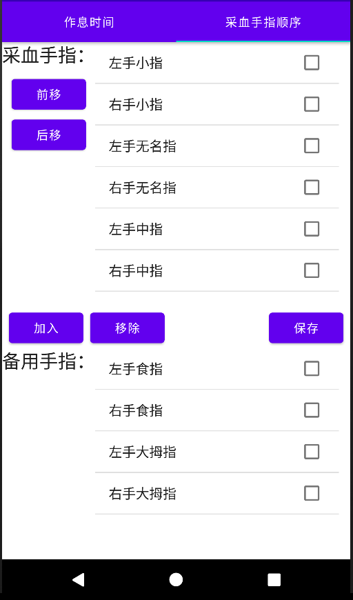

<html>
<header>
<title>赵志崑的网站—软件作品—糖笔记</title>
<meta http-equiv="Content-Type" content="text/html; charset=utf-8" />
<link rel="stylesheet" type="text/css" href="css/mystyle.css" />
</header>

<body>

<h1>糖笔记</h1>
<p>作者：<a href="https://zhaozk2000.github.io">赵志崑</a></p>
<p>糖笔记是一款为糖尿病患者开发的记录血糖的应用，适用安卓8.0或更高版本。主要功能包括：</p>
<ul type="square">
<li>记录每次血糖检测的时间、分类、血糖值、采血手指；</li>
<li>以图表的形式直观地展示血糖变化，以及异常情况统计；</li>
<li>对检测数据进行管理。</li>
</ul>

<p>主要界面</p>
<div >






</div>

<a class="round_button green" href="app_bgrecord/BGRecord1.0.apk">下载</a>

<div>
<p>手机扫描下面的二维码打开本页面</p>

</div>

</body>
</html>